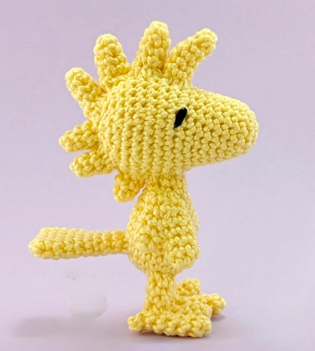

LEARN
Personalized Crochet Mini Courses
Short, friendly lessons designed around your project.

Learn by making.
Choose a project and we'll build a simple learning experience around your skill level.
- Beginner-friendly
- Focused lessons
- Personalized project guidance